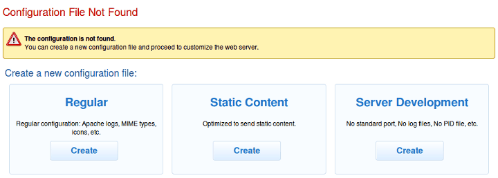
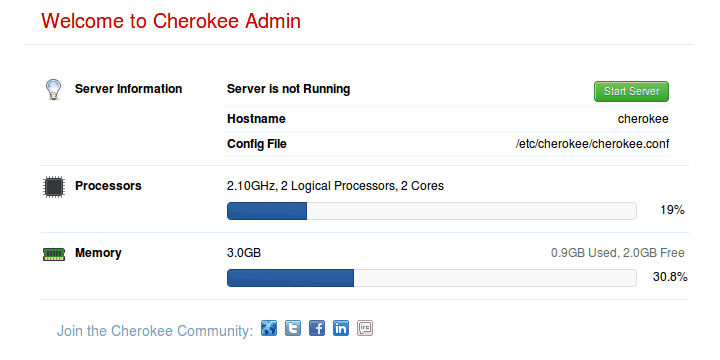
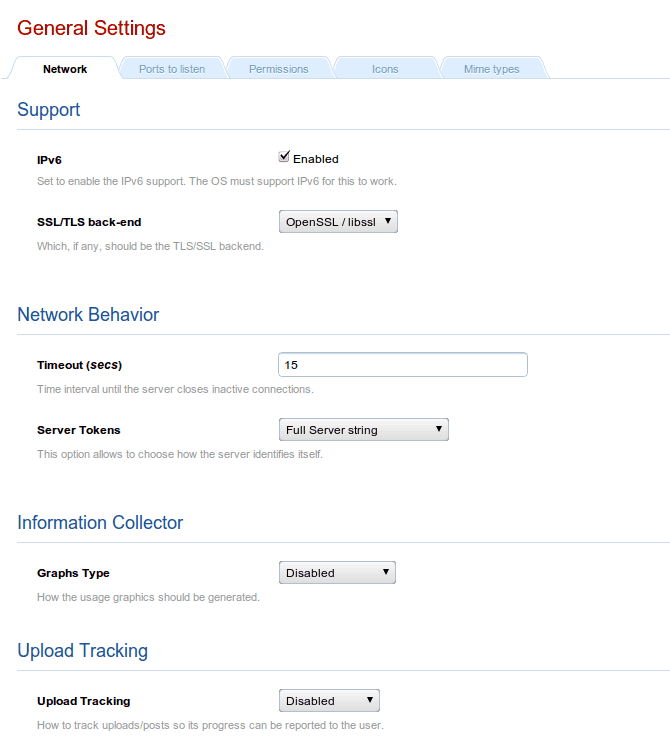
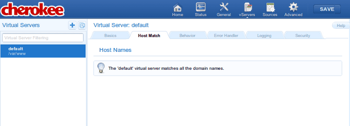
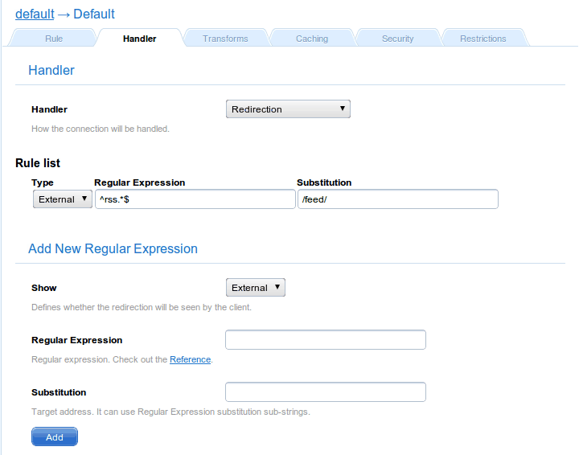

# cherokee-admin-launcher Checking TCP port 9090 availability.. OK Launching /usr/sbin/cherokee-admin.. OK Connecting.. OK
This section briefly describes a typical usage of the administration web interface provided by cherokee-admin. This is the recommended way of configuring Cherokee. If you are looking for development information relevant to your automation and scripting needs, you should refer to the appropriate section, specifically the cherokee.conf file specification.
We will first show a quick overview of the available options, followed by a simple walkthrough. You can learn more about the options in their specific documentation entries.
You can also take a quick look at the introductory screencast.

Overview
-
Home: This is the initial screen of cherokee-admin. From here you will be able to launch and stop the webserver, change the language of the configuration-interface, check a quick view of the server status and access relevant support and contact Cherokee-Project links.
-
Status: This gives access to usage graphs and statistics regarding each virtual host and the server as a whole.
-
General: There are a number of entries that specify the most significant configuration options such as the port - or ports - that the server will listen to, the default timeout, whether to support keep-alive connections, default icon and MIME type definitions and so on.
-
vServers: If you want your web server to work with more than one domain you will have to create Virtual servers other than the default one. Each one will have a completely independent configuration: paths, behavior, logging facilities, etc.
-
Sources: Define the resources that will be providing information. For instance, PHP.
-
Advanced: This is to configure the most complex parameters of the server and how it interacts with the operating system. If you are unsure about any of the options here, better not mingle with them. Default values should work just fine.
Walkthrough
There is very little set up you must do to have a perfectly functional web server out of the box. Cherokee’s default configuration can be used to serve any typical static website. For dynamic contents you should check the wizards, available using the buttons located at the top section of the left panel in the vServers section. This panel can either display information relevant to every virtual host in your system, or rule management information specific to a given virtual host if you are browsing a specific virtual host at the moment. In the first scenario, the wizards will be able to create new virtual servers customized for a specific need, while the second case would apply to the -preexisting- selected virtual host.
If you have a specific need, you should check out the recipes present in the link:cookbook.html’Cookbook] section of the documentation. Among other subjects, you can find information about Cherokee optimizations, setting up efficient authentication mechanisms, or configuring several popular application frameworks.
In this tutorial we will be setting up a system with a couple of virtual servers, PHP support, some redirection rules and a simple authentication mechanism.
To follow this walkthrough you need to be running cherokee-admin. This is an administration tool, so you will need system administrator rights. You can either launch it manually, letting it generate a one-time-password that you will use to securely connect to the user interface, or you can follow the recommended way and simply use cherokee-admin-launcher.
Launching the admin through cherokee-admin-launcher
Assuming you are using a desktop environment on the same host where Cherokee is installed, you can follow the launcher approach.
This will automatically open a web browser window pointing at http://localhost:9090, so you will be able to begin using cherokee-admin right away. If there is no web browser registered in your system, you will have to forget about using the launcher option, and run cherokee-admin directly. If this is not your case, you can skip the details for the manual launch.
Manually launching cherokee-admin
# cherokee-admin Login: User: admin One-time Password: yp7F1pMhtmD58DbB Cherokee Web Server 1.0.2 (Jun 19 2010): Listening on port 127.0.0.1:9090, TLS disabled, IPv6 enabled, using epoll, 4096 fds system limit, max. 2041 connections, caching I/O, single thread
Now you can access the administration interface simply by opening your web browser and visiting http://localhost:9090. Cherokee-admin supports several command line parameters, so you can change the predefined port in case it was already in use in your system.
The User and One-time Password will be required initially. This is to prevent other users of the local host from being able to configure the server unless they have access to the password. This is also very useful to allow temporary access to a remote administrator.
cherokee-admin
If your user doesn’t have enough privileges you will be notified. Also if no configuration file exists you will be prompted to create one with the default settings.

The regular template is a good starting point. Right now your web server will not be running yet. We will only be using two of the available tabs to adjust some more settings: General and Virtual Servers.

Sample view
Of course, once we’re done we will have to apply our changes and launch the server. The configuration changes must be submitted to the server, be it automatically if possible or by using the appropriate form submitting buttons. But no change is reflected in the configuration file until you actually Save the changes. You can be sure of not damaging anything while playing around with cherokee-admin. At least not until you Save the changes by using the SAVE button on the main toolbar. Note that, if the Cherokee server is running, the applied modifications will only affect the instance being executed if either Graceful restart or Hard restart are selected. No restart simply modifies the configuration file, but doesn’t affect the currently running instance. A graceful restart will preserve the old set-up for any prior connections, while a hard restart will kill every connection and instantly apply the changes.

Sample of tab for general settings
We will only be modifying the Permissions tab. It usually is a poor choice to run services with super user privileges. Set both User and Group to www-data. Your system might already have another user account specifically for the purpose of running a webserver. Use that instead if so, or create the www-data user if you don’t already have one.
Next is the vServers tab.

Virtual server tab
When you start, you will only have one virtual server called default. You can begin by cloning it as example. This can be achieved with the Clone Selected Virtual Server button, which is placed in the upper side of the left panel, adjacent to the Virtual Servers label and the Add New Virtual Server button.
While you are at it you should also append the following line to your /etc/hosts file (in Windows you will find this as %WINDIR%\system32\drivers\etc\hosts).
127.0.0.1 example.com example.net example.org
This is to allow your system to resolve requests for example.net or example.org locally. Of course, once you are out in the Wild (you know, in the Internet), you will need proper DNS records.
- default
-
We will leave default untouched except for the document root path, which we will change. This is done through the Basics tab. You could create by hand /var/www/default for example and set it up in the appropriate field.
If you access your machine by IP or a DNS resolution points in that direction for any particular domain, the contents of your document root directory will be exposed (/var/www by default unless you changed that during the build process). Whenever there is no match for a virtual server specifically defined in your list, the default virtual server will be the one responding.
To enable PHP support you will have to select the desired virtual server, access the Behavior tab, and click on the Rule Management button. This will replace the Virtual Servers panel with a Rules panel that applies only to the selected virtual server. The Add button now will give you access to manually adding rules or to the list of wizards. You will find PHP under the Languages category. Simply point and click, and this will make the required adjustments. Any file with the php extension will be served after being processed by the PHP interpreter. You should have php-cgi installed in your system for this, though. Don’t worry too much about it: the wizard will give you instructions and will notify any further requirements not yet satisfied by your system.
Any requested file would be sent. If a directory is requested, a file called index.php or index.html will be served if it is present (the search will be performed in that order; you can configure this in the Basics tab). If not, a directory listing is offered instead. If you would want to prevent this behavior but would like to keep up serving whatever content is requested directly, simply change the List & Send handler for the Static Content handler.
- example
-
Make sure to select the correct virtual server in the Virtual Servers panel displayed in the left side of the interface. If the panel was titled Behavior instead, make sure it applies to the desired virtual server. This can be easily checked, since it is displayed as a title in the upper part of the contents area, which is everything else on the screen that doesn’t belong to the panel. If you are inside another virtual server, just click on the host name to restore the Virtual Servers panel. If you have already selected the correct virtual host, access the Behavior tab and click on the Rule Management button to see the Behavior panel that will enable you to modify the rules of your virtual host.
For now this virtual server is an exact copy of the untouched default virtual server. Create some new directories by hand: /var/www/example and /var/www/example/auth, and configure the first one as default document root path. Just access the Basics tab, and set the Document Root field to /var/www/example.
Next, setup example.net and example.com in the Host match tab, so that requests to both domains can be managed byt your example virtual server. To do so just choose Wildcards as method, and add both names as wildcard strings. We’ll erase everything in the Targets list within the Behavior tab, except the default rule. With this we’ll only be able to serve static content.
Accessing the URL http://example.org should now show a list of available files and directories under /var/www/example/.
Now lets password protect the auth directory. Add a new Directory-type rule pointing to /auth. Then, through the Security tab, add a Validation Mechanism under Authentication.
The field Realm is mandatory. Lets set it as Secured Area. If you choose PAM and impose no more restrictions, only users with a local account in your system will be able to access the secured zone at http://example.net/auth Other mechanisms would work in a similar fashion but with their specific requirements. For example, had you chosen Plain text file instead of PAM you would have had to specify a Password File. For example, it could have been /var/www/passwords.txt with the following contents:
testuser1:password1 testuser2:password2
Note that the rule must not be flagged as Final, or else no other rules will be applied afterwards and no access will be given to any contents. This is because at this point we have not defined any handler for the /auth rule and nothing would be served.
Refer to the Cookbook for detailed examples on the different options.
Lastly, lets configure a redirection rule by choosing a "Regular Expression" as the new rule type. Type the following regex: ^/rss.*$ Then, configure the Handler tab with the following settings.
-
Handler: Redirection
-
Type: External
-
Regular Expression: you can leave it empty or specify a series of new matches. The shot has the base regex for ilustration purposes: ^/rss.*$
-
Substitution: this will be the target: /feed
Redirection handlerAnd voilà! A request of the form http://example.net/rss2 would be redirected to http://example.net/feed
Any rule type can be used with the redirection handler: Directory, Extensions, Regular Expression, etc. In this case the fact that the rule type is "Regular Expression" affects only slightly. Refer to the appropriate section of the documentation, Redirection Handler, for more details.
Note that the Type of the Redirection is External. This means the server will instruct the requesting web client to fetch the redirected URL, which in turn means the client will always know what the final URL is. This also means the redirection can be done to servers other than your own. If it were internal, the redirection would be invisible (not showing the target URL), but it would be limited to the same virtual server.
A much more general redirection could be one using these values:
- Regular Expression
-
^/(.*)$
- Substitution
Note that this rule would have to be external since example.com is not among the domains managed by our configuration.
This would redirect every petition to a site hosted under http://example.com/example.net. For instance, the request for http://example.net/image.jpg would return http://example.com/example.net/image.jpg.
If you need more details, Check out the documentation for the redirection handler.
-